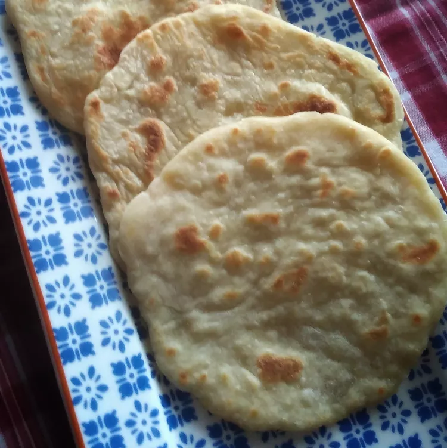

Chapati
Home

Description
Adopted from Indian cuisine, African bread known as chapati has been a
part of East African cuisine for centuries. The East African recipe is
slightly different from its Indian counterpart. This bread accompanies
African soups and stews well. Preparation is minimal, making this a
great choice for cooks in a pinch.
Ingredients
2 cups all-purpose flour, sifted
1 teaspoon salt
¾ cup warm water, or as needed
1 teaspoon vegetable oil
2 teaspoons all-purpose flour, or as needed
1 tablespoon vegetable oil
- All-Purpose Flour (sifted): 2 cups
- Salt: 1 tsp
- Water (warm): 3/4 cups
- Vegetable oil: 1 tsp
- All-Purpose Flour: 2 tsp
- Vegetable oil: 1 tbsp
Steps
-
Mix together 2 cups flour and salt in a large bowl until well
combined. Slowly mix in enough warm water to make a thick dough. Mix
in oil until combined.
-
Transfer dough to a cool surface and knead for a few minutes, adding
2 teaspoonfuls flour. Return dough to the same bowl, cover with a
clean cloth, and let rest for 30 minutes.
-
Preheat the oven to 200 degrees F (95 degrees C).
-
Heat a large skillet or griddle over medium heat.
-
Divide dough into orange-sized balls. Flatten into 6-inch circles.
-
Fry in batches in the hot skillet, turning once, until golden brown
and spotted, 6 to 8 minutes. Repeat with remaining dough. Keep
chapatis warm in the oven.